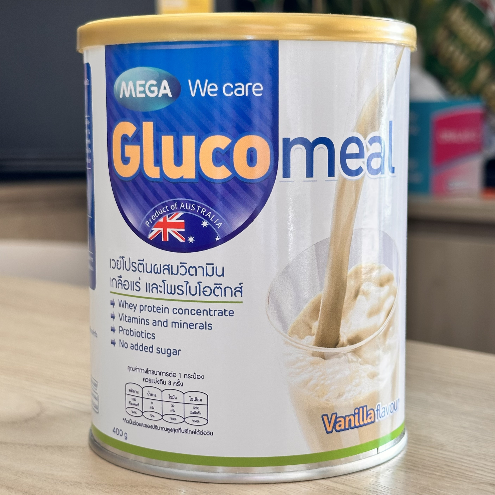
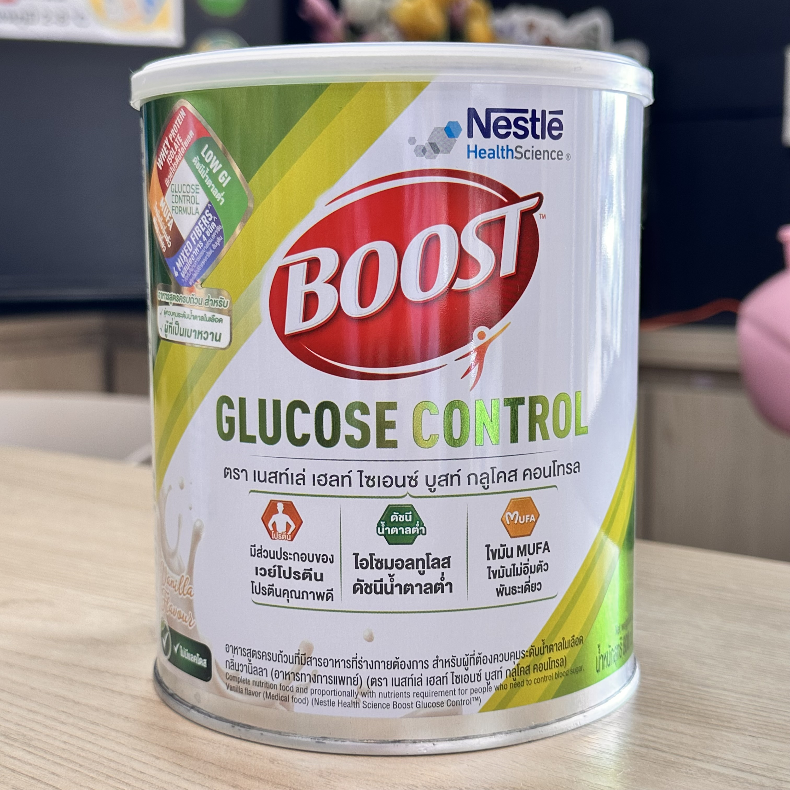
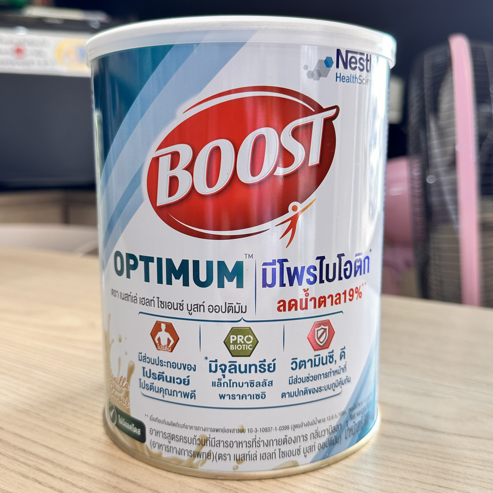
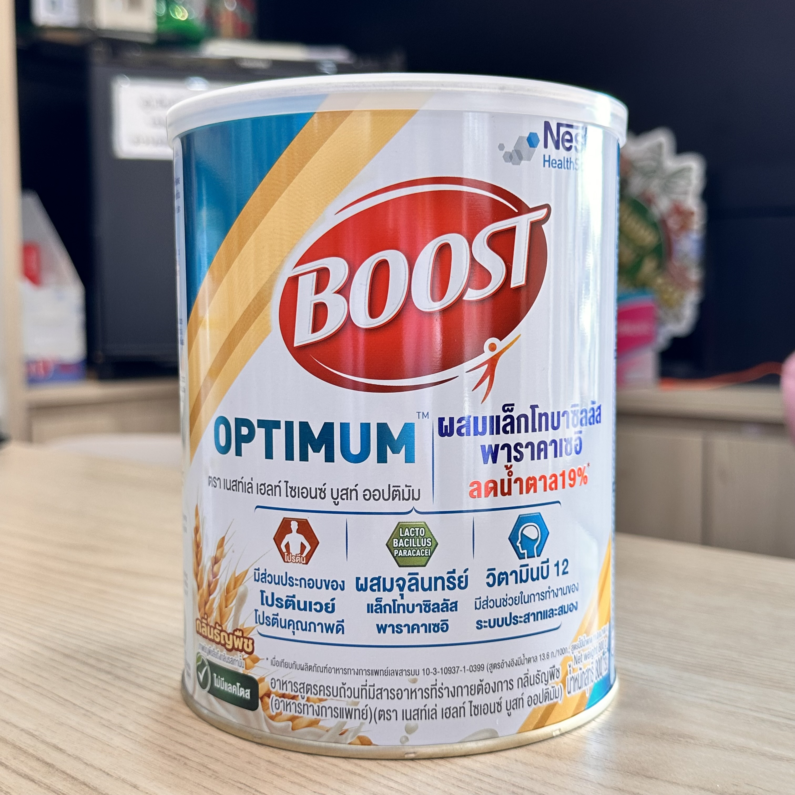
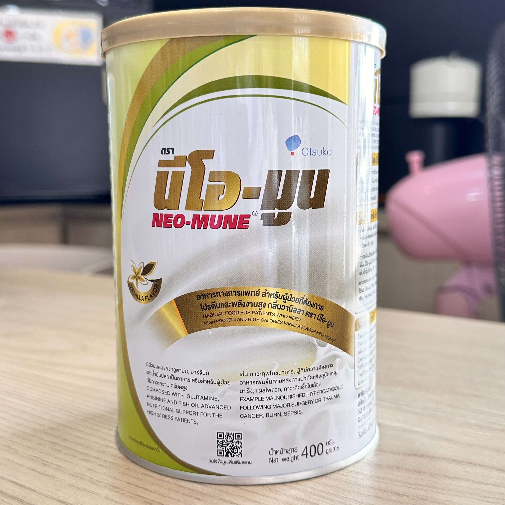

ประเมินพลังงาน โปรตีน และคำนวณอาหารเสริมทางการแพทย์
ดัชนีมวลกาย (BMI)
พลังงานเป้าหมาย
🥩 โปรตีน
แหล่งอ้างอิงการคำนวณโปรตีนของคุณ
* ข้อมูลนี้เพื่อการส่งเสริมสุขภาพเบื้องต้น หากมีโรคประจำตัวซับซ้อนโปรดปรึกษาแพทย์หรือนักกำหนดอาหาร
💡 ทริคกะปริมาณ: อาหารในตารางด้านล่างนี้ ให้ปริมาณโปรตีนเทียบเท่ากับ 20 กรัม เพื่อให้คุณนำไปกะปริมาณด้วยสายตาได้ง่ายขึ้น (น้ำหนักคืออาหารที่ปรุงสุกแล้ว)
| หมวดหมู่ | ชนิดอาหาร | ปริมาณน้ำหนักเนื้อ (เพื่อให้ได้โปรตีน 20g) | ข้อควรระวัง / ทริคเพิ่มเติม |
|---|---|---|---|
| เนื้อสัตว์ | อกไก่ / สันในไก่ (สุก) | 70 กรัม (ประมาณ 4-5 ช้อนกินข้าว) |
โปรตีนสูง ไขมันต่ำมาก ลีนที่สุด |
| เนื้อสัตว์ | เนื้อหมู (เนื้อแดง/ไม่ติดมัน สุก) | 80 กรัม (ประมาณ 5-6 ช้อนกินข้าว) |
ควรหลีกเลี่ยงหมูสามชั้นหรือคอหมู |
| เนื้อสัตว์ | เนื้อปลา (เช่น ปลานิล/ปลาทับทิม สุก) | 90 - 100 กรัม (ประมาณครึ่งตัวขนาดกลาง) |
ย่อยง่าย มีไขมันดี เหมาะกับทุกวัย |
| เนื้อสัตว์ | กุ้ง (เนื้อกุ้งล้วน สุก) | 90 - 100 กรัม (ประมาณ 8-10 ตัวขนาดกลาง) |
หากคุมคอเลสเตอรอล ควรเลี่ยงส่วนหัวและมันกุ้ง |
| ไข่ | ไข่ไก่ (เบอร์ 2-3) | 3 ฟอง | หากต้องการลดไขมัน/คอเลสเตอรอล ให้ใช้ ไข่ขาว 5-6 ฟอง แทน |
| เต้าหู้ | เต้าหู้ไข่ / เต้าหู้หลอดถั่วเหลือง | 1.5 - 2 หลอด | ตรวจสอบโซเดียมในฉลากเพิ่มเติม |
| เต้าหู้ | เต้าหู้แข็ง (ขาว/เหลือง) | 1 แผ่น | โปรตีนสูงและอยู่ท้อง เหมาะสำหรับมังสวิรัติ |
| นม | นมวัว / นมถั่วเหลือง (สูตรปกติ) | 2.5 - 3 กล่อง (กล่องละ 200 ml) |
ผู้ป่วยโรคไต (ที่ต้องจำกัดฟอสฟอรัส) ควรระมัดระวังการดื่มนมวัว |
• เนื้อหมูไม่ติดมัน 100 กรัม (~25g)
• ไข่ไก่ 1 ฟอง (~7g)
• อกไก่ลอกหนัง (สุก) 150 กรัม (~45g)
• เนื้อหมูสับ 50 กรัม (~12.5g)
• เต้าหู้แข็ง 100 กรัม (ประมาณ 1 แผ่น) (~15g)
• เนื้อปลานิล 150 กรัม (ประมาณเกือบ 1 ตัว) (~30g)
ระบุตัวเลขปริมาณ และเลือกหน่วยที่ต้องการเพื่อประเมินโปรตีนในมื้ออาหารของคุณ
| วัตถุดิบที่เลือก | ปริมาณ | โปรตีน (g) | ลบ |
|---|---|---|---|
| ยังไม่มีการเลือกวัตถุดิบ | |||
เป้าหมายโปรตีนต่อวันของคุณคือ: 0 - 0 กรัม/วัน
สามารถนำเป้าหมายนี้มากรอกในช่อง "ต้องการโปรตีน" ด้านล่าง เพื่อคำนวณปริมาณที่ต้องชงได้เลยครับ
| ผลิตภัณฑ์ | โปรตีนที่ได้ (ต่อ 1 ช้อนตวง) |
คำนวณหาปริมาณที่ต้องกิน (ต้องการโปรตีน → ต้องกินกี่ช้อน) |
คำนวณโปรตีนที่จะได้รับ (กินกี่ช้อน → ได้โปรตีนเท่าไหร่) |
|---|---|---|---|
|
 GlucoMeal
1 ช้อน = 25 กรัม
|
4.50 กรัม |
ต้องการโปรตีน
กรัม
➔ ต้องกินผลิตภัณฑ์ 0 กรัม
(เท่ากับตักประมาณ 0 ช้อนตวง) |
ชงกิน
ช้อนตวง
➔ ได้รับโปรตีน 0 กรัม
|
|
 BOOST GLUCOSE CONTROL
1 ช้อน ≈ 6.88 กรัม
|
1.41 กรัม |
ต้องการโปรตีน
กรัม
➔ ต้องกินผลิตภัณฑ์ 0 กรัม
(เท่ากับตักประมาณ 0 ช้อนตวง) |
ชงกิน
ช้อนตวง
➔ ได้รับโปรตีน 0 กรัม
|
|
 BOOST OPTIMUM
(มีโพรไบโอติก) 1 ช้อน ≈ 7.86 กรัม
|
1.45 กรัม |
ต้องการโปรตีน
กรัม
➔ ต้องกินผลิตภัณฑ์ 0 กรัม
(เท่ากับตักประมาณ 0 ช้อนตวง) |
ชงกิน
ช้อนตวง
➔ ได้รับโปรตีน 0 กรัม
|
|
 BOOST OPTIMUM
(ผสมแล็กโทบาซิลลัส) 1 ช้อน ≈ 7.86 กรัม
|
1.45 กรัม |
ต้องการโปรตีน
กรัม
➔ ต้องกินผลิตภัณฑ์ 0 กรัม
(เท่ากับตักประมาณ 0 ช้อนตวง) |
ชงกิน
ช้อนตวง
➔ ได้รับโปรตีน 0 กรัม
|
|
 NEO-MUNE
1 ช้อน = 8.5 กรัม
|
2.22 กรัม |
ต้องการโปรตีน
กรัม
➔ ต้องกินผลิตภัณฑ์ 0 กรัม
(เท่ากับตักประมาณ 0 ช้อนตวง) |
ชงกิน
ช้อนตวง
➔ ได้รับโปรตีน 0 กรัม
|
*หมายเหตุ: หากรูปภาพไม่แสดงผล โปรดตรวจสอบให้แน่ใจว่าได้นำไฟล์รูปภาพนามสกุล .jpg ทั้งหมดไปไว้ในโฟลเดอร์เดียวกันกับไฟล์เว็บนี้นะครับ